@syms f_x f_y
n = [1, 0, f_x] × [0, 1, f_y]3-element Vector{Sym}:
-fₓ
-f_y
1This section uses these add-on packages:
using CalculusWithJulia
using Plots
using SymPy
using RootsAnd the following from the Contour package:
import Contour: contours, levels, level, lines, coordinatesThis section presents different applications of scalar functions.
Consider the case \(f:R^2 \rightarrow R\). We visualize \(z=f(x,y)\) through a surface. At a point \((a, b)\), this surface, if \(f\) is sufficiently smooth, can be approximated by a flat area, or a plane. For example, the Northern hemisphere of the earth, might be modeled simplistically by \(z = \sqrt{R^2 - (x^2 + y^2)}\) for some \(R\) and with the origin at the earth’s core. The ancient view of a “flat earth,” can be more generously seen as identifying this tangent plane with the sphere. More apt for current times, is the use of GPS coordinates to describe location. The difference between any two coordinates is technically a distance on a curved, nearly spherical, surface. But if the two points are reasonably closes (miles, not tens of miles) and accuracy isn’t of utmost importance (i.e., not used for self-driving cars), then the distance can be found from the Euclidean distance formula, \(\sqrt{(\Delta\text{latitude})^2 + \Delta\text{longitude})^2}\). That is, as if the points were on a plane, not a curved surface.
For the univariate case, the tangent line has many different uses. Here we see the tangent plane also does.
The partial derivatives have the geometric view of being the derivative of the univariate functions \(f(\vec\gamma_x(t))\) and \(f(\vec\gamma_y(t))\), where \(\vec\gamma_x\) moves just parallel to the \(x\) axis (e.g. \(\langle t + a, b\rangle\)). and \(\vec\gamma_y\) moves just parallel to the \(y\) axis. The partial derivatives then are slopes of tangent lines to each curve. The tangent plane, should it exist, should match both slopes at a given point. With this observation, we can identify it.
Consider \(f(\vec\gamma_x)\) at a point \((a,b)\). The path has a tangent vector, which has “slope” \(\frac{\partial f}{\partial x}\). and in the direction of the \(x\) axis, but not the \(y\) axis, as does this vector: \(\langle 1, 0, \frac{\partial f}{\partial x} \rangle\). Similarly, this vector \(\langle 0, 1, \frac{\partial f}{\partial y} \rangle\) describes the tangent line to \(f(\vec\gamma_y)\) a the point.
These two vectors will lie in the plane. The normal vector is found by their cross product:
@syms f_x f_y
n = [1, 0, f_x] × [0, 1, f_y]3-element Vector{Sym}:
-fₓ
-f_y
1Let \(\vec{x} = \langle a, b, f(a,b)\). The tangent plane at \(\vec{x}\) then is described by all vectors \(\vec{v}\) with \(\vec{n}\cdot(\vec{v} - \vec{x}) = 0\). Using \(\vec{v} = \langle x,y,z\rangle\), we have:
\[ [-\frac{\partial f}{\partial x}, -\frac{\partial f}{\partial y}, 1] \cdot [x-a, y-b, z - f(a,b)] = 0, \]
or,
\[ z = f(a,b) + \frac{\partial f}{\partial x} (x-a) + \frac{\partial f}{\partial y} (y-b), \]
which is more compactly expressed as
\[ z = f(a,b) + \nabla(f) \cdot \langle x-a, y-b \rangle. \]
This form would then generalize to scalar functions from \(R^n \rightarrow R\). This is consistent with the definition of \(f\) being differentiable, where \(\nabla{f}\) plays the role of the slope in the formulas.
The following figure illustrates the above for the function \(f(x,y) = 6 - x^2 - y^2\):
f(x,y) = 6 - x^2 -y^2
f(x)= f(x...)
a,b = 1, -1/2
# draw surface
xr = 7/4
xs = ys = range(-xr, xr, length=100)
surface(xs, ys, f, legend=false)
# visualize tangent plane as 3d polygon
pt = [a,b]
tplane(x) = f(pt) + gradient(f)(pt) ⋅ (x - [a,b])
pts = [[a-1,b-1], [a+1, b-1], [a+1, b+1], [a-1, b+1], [a-1, b-1]]
plot!(unzip([[pt..., tplane(pt)] for pt in pts])...)
# plot paths in x and y direction through (a,b)
γ_x(t) = pt + t*[1,0]
γ_y(t) = pt + t*[0,1]
plot_parametric!((-xr-a)..(xr-a), t -> [γ_x(t)..., (f∘γ_x)(t)], linewidth=3)
plot_parametric!((-xr-b)..(xr-b), t -> [γ_y(t)..., (f∘γ_y)(t)], linewidth=3)
# draw directional derivatives in 3d and normal
pt = [a, b, f(a,b)]
fx, fy = gradient(f)(a,b)
arrow!(pt, [1, 0, fx], linewidth=3)
arrow!(pt, [0, 1, fy], linewidth=3)
arrow!(pt, [-fx, -fy, 1], linewidth=3) # normal
# draw point in base, x-y, plane
pt = [a, b, 0]
scatter!(unzip([pt])...)
arrow!(pt, [1,0,0], linestyle=:dash)
arrow!(pt, [0,1,0], linestyle=:dash)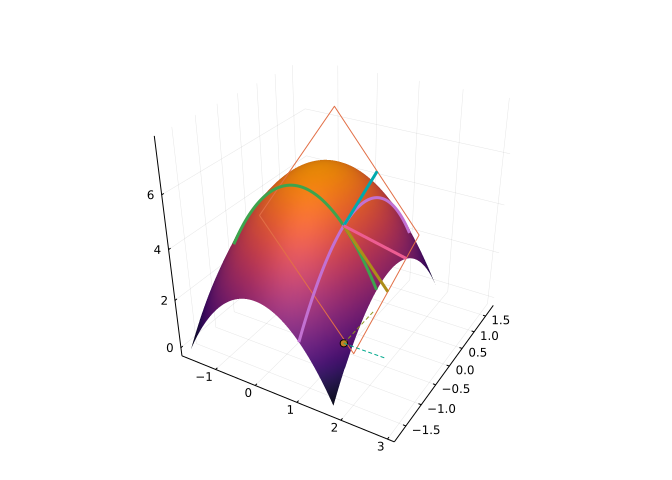
The equation for the tangent plane is often expressed in a more explicit form. For \(n=2\), if we set \(dx = x-a\) and \(dy=y-a\), then the equation for the plane becomes:
\[ f(a,b) + \frac{\partial f}{\partial x} dx + \frac{\partial f}{\partial y} dy, \]
which is a common form for the equation, though possibly confusing, as \(\partial x\) and \(dx\) need to be distinguished. For \(n > 2\), additional terms follow this pattern. This explicit form is helpful when doing calculations by hand, but much less so when working on the computer, say with Julia, as the representations using vectors (or matrices) can be readily implemented and their representation much closer to the formulas. For example, consider these two possible functions to find the tangent plane (returned as a function) at a point in \(2\) dimensions
function tangent_plane_1st_crack(f, pt)
fx, fy = ForwardDiff.gradient(f, pt)
x -> f(x...) + fx * (x[1]-pt[1]) + fy * (x[2]-pt[2])
endtangent_plane_1st_crack (generic function with 1 method)It isn’t so bad, but as written, we specialized to the number of dimensions, used indexing, and with additional dimensions, it clearly would get tedious to generalize. Using vectors, we might have:
function tangent_plane(f, pt)
∇f = ForwardDiff.gradient(f, pt) # using a variable ∇f
x -> f(pt) + ∇f ⋅ (x - pt)
endtangent_plane (generic function with 1 method)This is much more like the compact formula and able to handle higher dimensions without rewriting.
Consider the surface described by \(f(x,y,z) = c\), a constant. This is more general than surfaces described by \(z = f(x,y)\). The concept of a tangent plane should still be applicable though. Suppose, \(\vec{\gamma}(t)\) is a curve in the \(x-y-z\) plane, then we have \((f\circ\vec\gamma)(t)\) is a curve on the surface and its derivative is given by the chain rule through: \(\nabla{f}(\vec\gamma(t))\cdot \vec\gamma'(t)\). But this composition is constantly the same value, so the derivative is \(0\). This says that \(\nabla{f}(\vec\gamma(t))\) is orthogonal to \(\vec\gamma'(t)\) for any curve. As these tangential vectors to \(\vec\gamma\) lie in the tangent plane, the tangent plane can be characterized by having \(\nabla{f}\) as the normal.
This computation was previously done in two dimensions, and showed the gradient is orthogonal to the contour lines (and points in the direction of greatest ascent). It can be generalized to higher dimensions.
The surface \(F(x,y,z) = z - f(x,y) = 0\) has gradient given by \(\langle -\partial{f}/\partial{x}, -\partial{f}/\partial{y}, 1\rangle\), and as seen above, this vector is normal to the tangent plane, so this generalization agrees on the easier case.
For clarity:
Let \(z = f(x,y) = \sin(x)\cos(x-y)\). Find an equation for the tangent plane at \((\pi/4, \pi/3)\).
We have many possible forms to express this in, but we will use the functional description:
@syms x, y(x, y)f(x,y) = sin(x) * cos(x-y)
f(x) = f(x...)
vars = [x, y]
gradf = diff.(f(x,y), vars) # or use gradient(f, vars) or ∇((f,vars))
pt = [PI/4, PI/3]
gradfa = subs.(gradf, x=>pt[1], y=>pt[2])
f(pt) + gradfa ⋅ (vars - pt)A cylinder \(f(x,y,z) = (x-a)^2 + y^2 = (2a)^2\) is intersected with a sphere \(g(x,y,z) = x^2 + y^2 + z^2 = a^2\). Let \(V\) be the line of intersection. (Viviani’s curve). Let \(P\) be a point on the curve. Describe the tangent to the curve.
We have the line of intersection will have tangent line lying in the tangent plane to both surfaces. These two surfaces have normal vectors given by the gradient, or \(\vec{n}_1 = \langle 2(x-a), 2y, 0 \rangle\) and \(\vec{n}_2 = \langle 2x, 2y, 2z \rangle\). The cross product of these two vectors will lie in both tangent planes, so we have:
\[ P + t (\vec{n}_1 \times \vec{n}_2), \]
will describe the tangent.
The curve may be described parametrically by \(\vec\gamma(t) = a \langle 1 + \cos(t), \sin(t), 2\sin(t/2) \rangle\). Let’s see that the above is correct by verifying that the cross product of the tangent vector computed two ways is \(0\):
a = 1
gamma(t) = a * [1 + cos(t), sin(t), 2sin(t/2) ]
P = gamma(1/2)
n1(x,y,z)= [2*(x-a), 2y, 0]
n2(x,y,z) = [2x,2y,2z]
n1(x) = n1(x...)
n2(x) = n2(x...)
t = 1/2
(n1(gamma(t)) × n2(gamma(t))) × gamma'(t)3-element Vector{Float64}:
0.0
0.0
0.0The wireframe plot can be used to visualize a surface of the type z=f(x,y), as previously illustrated. However we have no way of plotting \(3\)-dimensional implicit surfaces (of the type \(F(x,y,z)=c\)) as we do for \(2\)-dimensional implicit surfaces with Plots. (The MDBM or IntervalConstraintProgramming packages can be used along with Makie plotting package to produce one.)
The CalculusWithJulia package provides a stop-gap function, plot_implicit_surface for this task. The basic idea is to slice an axis, by default the \(z\) axis up and for each level plot the contours of \((x,y) \rightarrow f(x,y,z)-c\), which becomes a \(2\)-dimensional problem. The function allows any of 3 different axes to be chosen to slice over, the default being just the \(z\) axis.
We demonstrate with an example from a February 14, 2019 article in the New York Times. It shows an equation for a “heart,” as the graphic will illustrate:
a, b = 1, 3
f(x,y,z) = (x^2 + ((1+b) * y)^2 + z^2 - 1)^3 - x^2 * z^3 - a * y^2 * z^3
CalculusWithJulia.plot_implicit_surface(f, xlim=-2..2, ylim=-1..1, zlim=-1..2)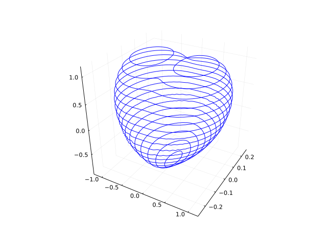
The tangent plane is the best “linear approximation” to a function at a point. “Linear” refers to mathematical properties of the tangent plane, but at a practical level it means easy to compute, as it will involve only multiplication and addition. “Approximation” is useful in that if a bit of error is an acceptable tradeoff for computational ease, the tangent plane may be used in place of the function. In the univariate case, this is known as linearization, and the tradeoff is widely used in the derivation of theoretical relationships, as well as in practice to get reasonable numeric values.
Formally, this is saying:
\[ f(\vec{x}) \approx f(\vec{a}) + ∇f(\vec{a}) ⋅ (\vec{x} - \vec{a}). \]
The explicit meaning of \(\approx\) will be made clear when the generalization of Taylor’s theorem is to be stated.
The volume of a cylinder is \(V=\pi r^2 h\). It is thought a cylinder has \(r=1\) and \(h=2\). If instead, the amounts are \(r=1.01, h=2.01\), what is the difference in volume?
That is, if \(V(r,h) = \pi r^2 h\), what is \(V(1.01, 2.01) - V(1,2)\)?
We can use linear approximation to see that this difference is approximately \(\nabla{V} \cdot \langle 0.01, 0.01 \rangle\). This is:
V(r, h) = pi * r^2 * h
V(v) = V(v...)
a₁ = [1,2]
dx₁ = [0.01, 0.01]
ForwardDiff.gradient(V, a₁) ⋅ dx₁ # or use ∇(V)(a)0.15707963267948966The exact difference can be computed:
V(a₁ + dx₁) - V(a₁)0.15833941133357854Let \(f(x,y) = \sin(\pi x y^2)\). Estimate \(f(1.1, 0.9)\).
Using linear approximation with \(dx=0.1\) and \(dy=-0.1\), this is
\[ f(1,1) + \nabla{f}(1,1) \cdot \langle 0.1, -0.1\rangle, \]
where \(f(1,1) = \sin(\pi) = 0\) and \(\nabla{f} = \langle y^2\cos(\pi x y^2), \cos(\pi x y^2) 2y\rangle = \cos(\pi x y^2)\langle x,2y\rangle\). So, the answer is:
\[ 0 + \cos(\pi) \langle 1,2\rangle\cdot \langle 0.1, -0.1 \rangle = (-1)(0.1 - 2(0.1)) = 0.1. \]
A piriform is described by the quartic surface \(f(x,y,z) = x^4 -x^3 + y^2+z^2 = 0\). Find the tangent line at the point \(\langle 2,2,2 \rangle\).
Here, \(\nabla{f}\) describes a normal to the tangent plane. The description of a plane may be described by \(\hat{N}\cdot(\vec{x} - \vec{x}_0) = 0\), where \(\vec{x}_0\) is identified with a point on the plane (the point \((2,2,2)\) here). With this, we have \(\hat{N}\cdot\vec{x} = ax + by + cz = \hat{N}\cdot\langle 2,2,2\rangle = 2(a+b+c)\). For ths problem, \(\nabla{f}(2,2,2) = \langle a, b, c\rangle\) is given by:
f(x,y,z) = x^4 -x^3 + y^2 + z^2
f(v) = f(v...)
a, b,c = ∇(f)(2,2,2)
"$a x + $b y + $c z = $([a,b,c] ⋅ [2,2,2])""20 x + 4 y + 4 z = 56"The level curve \(f(x,y)=0\) and the level curve \(g(x,y)=0\) may intersect. Solving algebraically for the intersection may be difficult in most cases, though the linear case is not. (The linear case being the intersection of two lines).
To elaborate, consider two linear equations written in a general form:
\[ \begin{align} ax + by &= u\\ cx + dy &= v \end{align} \]
A method to solve this by hand would be to solve for \(y\) from one equation, replace this expression into the second equation and then solve for \(x\). From there, \(y\) can be found. A more advanced method expresses the problem in a matrix formulation of the form \(Mx=b\) and solves that equation. This form of solving is implemented in Julia, through the “backslash” operator. Here is the general solution:
@syms a b c d u v
M = [a b; c d]
B = [u, v]
M \ B .|> simplify2-element Vector{Sym}:
(-b*v + d*u)/(a*d - b*c)
(a*v - c*u)/(a*d - b*c)The term \(\det(M) = ad-bc\) term is important, as evidenced by its appearance in the denominator of each term. When this is zero there is not a unique solution, as in the typical case.
Using Newton’s method to solve for intersection points, uses linearization of the surfaces to replace the problem to the intersection of level curves for tangent planes. This is the linear case that can be readily solved. As with Newton’s method for the univariate case, the new answer is generally a better approximation to the answer, and the process is iterated to get a good enough approximation, as defined through some tolerance.
Consider the functions \(f(x,y) =2 - x^2 - y^2\) and \(g(x,y) = 3 - 2x^2 - (1/3)y^2\). These graphs show their surfaces with the level sets for \(c=0\) drawn and just the levels sets, showing they intersect in \(4\) places.

We look to find the intersection point near \((1,1)\) using Newton’s method
We have by linearization:
\[ \begin{align} f(x,y) &\approx f(x_n, y_n) + \frac{\partial f}{\partial x}\Delta x + \frac{\partial f}{\partial y}\Delta y \\ g(x,y) &\approx g(x_n, y_n) + \frac{\partial g}{\partial x}\Delta x + \frac{\partial g}{\partial y}\Delta y, \end{align} \]
where \(\Delta x = x- x_n\) and \(\Delta y = y-y_n\). Setting \(f(x,y)=0\) and \(g(x,y)=0\), leaves these two linear equations in \(\Delta x\) and \(\Delta y\):
\[ \begin{align} \frac{\partial f}{\partial x} \Delta x + \frac{\partial f}{\partial y} \Delta y &= -f(x_n, y_n)\\ \frac{\partial g}{\partial x} \Delta x + \frac{\partial g}{\partial y} \Delta y &= -g(x_n, y_n). \end{align} \]
One step of Newton’s method defines \((x_{n+1}, y_{n+1})\) to be the values \((x,y)\) that make the linearized functions about \((x_n, y_n)\) both equal to \(\vec{0}\).
As just described, we can use Julia’s \ operation to solve the above system of equations, if we express them in matrix form. With this, one step of Newton’s method can be coded as follows:
function newton_step(f, g, xn)
M = [ForwardDiff.gradient(f, xn)'; ForwardDiff.gradient(g, xn)']
b = -[f(xn), g(xn)]
Delta = M \ b
xn + Delta
endnewton_step (generic function with 1 method)We investigate what happens starting at \((1,1)\) after one step:
𝒇(x,y) = 2 - x^2 - y^2
𝒈(x,y) = 3 - 2x^2 - (1/3)y^2
𝒇(v) = 𝒇(v...); 𝒈(v) = 𝒈(v...)
𝒙₀ = [1,1]
𝒙₁ = newton_step(𝒇, 𝒈, 𝒙₀)2-element Vector{Float64}:
1.2
0.8The new function values are
𝒇(𝒙₁), 𝒈(𝒙₁)(-0.08000000000000007, -0.09333333333333327)We can get better approximations by iterating. Here we hard code \(4\) more steps:
𝒙₂ = newton_step(𝒇, 𝒈, 𝒙₁)
𝒙₃ = newton_step(𝒇, 𝒈, 𝒙₂)
𝒙₄ = newton_step(𝒇, 𝒈, 𝒙₃)
𝒙₅ = newton_step(𝒇, 𝒈, 𝒙₄)
𝒙₅, 𝒇(𝒙₅), 𝒈(𝒙₅)([1.1832159566199232, 0.7745966692414834], 0.0, 1.6653345369377348e-16)We see that at the new point, x5, both functions are basically the same value, \(0\), so we have approximated the intersection point.
For nearby initial guesses and reasonable functions, Newton’s method is quadratic, so should take few steps for convergence, as above.
Here is a simplistic method to iterate \(n\) steps:
function nm(f, g, x, n=5)
for i in 1:n
x = newton_step(f, g, x)
end
x
endnm (generic function with 2 methods)Consider the bicylinder the intersection of two perpendicular cylinders of the same radius. If the radius is \(1\), we might express these by the functions:
\[ f(x,y) = \sqrt{1 - y^2}, \quad g(x,y) = \sqrt{1 - x^2}. \]
We see that \((1,1)\), \((-1,1)\), \((1,-1)\) and \((-1,-1)\) are solutions to \(f(x,y)=0\), \(g(x,y)=0\) and \((0,0)\) is a solution to \(f(x,y)=1\) and \(g(x,y)=1\). What about a level like \(1/2\), say?
Rather than work with \(f(x,y) = c\) we solve \(f(x,y)^2 = c^2\), as that will be avoid issues with the square root not being defined. Here is one way to solve:
c = 1/2
f(x,y) = 1 - y^2 - c^2
g(x,y) = (1 - x^2) - c^2
f(v) = f(v...); g(v) = g(v...)
nm(f, g, [1/2, 1/3])2-element Vector{Float64}:
0.8660254037844386
0.8660254037935468That \(x=y\) is not so surprising, and in fact, this problem can more easily be solved analytically through \(x^2 = y^2 = 1 - c^2\).
Implicit differentiation of an equation of two variables (say \(x\) and \(y\)) is performed by assuming \(y\) is a function of \(x\) and when differentiating an expression with \(y\), use the chain rule. For example, the slope of the tangent line, \(dy/dx\), for the general ellipse \(x^2/a + y^2/b = 1\) can be found through this calculation:
\[ \frac{d}{dx}(\frac{x^2}{a} + \frac{y^2}{b}) = \frac{d}{dx}(1), \]
or, using \(d/dx(y^2) = 2y dy/dx\):
\[ \frac{2x}{a} + \frac{2y \frac{dy}{dx}}{b} = 0. \]
From this, solving for \(dy/dx\) is routine, as the equation is linear in that unknown: \(dy/dx = -(b/a)(x/y)\)
With more variables, the same technique may be used. Say we have variables \(x\), \(y\), and \(z\) in a relation like \(F(x,y,z) = 0\). If we assume \(z=z(x,y)\) for some differentiable function (we mention later what conditions will ensure this assumption is valid for some open set), then we can proceed as before, using the chain rule as necessary.
For example, consider the ellipsoid: \(x^2/a + y^2/b + z^2/c = 1\). What is \(\partial z/\partial x\) and \(\partial{z}/\partial{y}\), as needed to describe the tangent plane as above?
To find \(\partial/\partial{x}\) we have:
\[ \frac{\partial}{\partial{x}}(x^2/a + y^2/b + z^2/c) = \frac{\partial}{\partial{x}}1, \]
or
\[ \frac{2x}{a} + \frac{0}{b} + \frac{2z\frac{\partial{z}}{\partial{x}}}{c} = 0. \]
Again the desired unknown is within a linear equation so can readily be solved:
\[ \frac{\partial{z}}{\partial{x}} = -\frac{c}{a} \frac{x}{z}. \]
A similar approach can be used for \(\partial{z}/\partial{y}\).
Let \(f(x,y,z) = x^4 -x^3 + y^2 + z^2 = 0\) be a surface with point \((2,2,2)\). Find \(\partial{z}/\partial{x}\) and \(\partial{z}/\partial{y}\).
To find \(\partial{z}/\partial{x}\) and \(\partial{z}/\partial{y}\) we have:
@syms x, y, Z()
∂x = solve(diff(x^4 -x^3 + y^2 + Z(x,y)^2, x), diff(Z(x,y),x))
∂y = solve(diff(x^4 -x^3 + y^2 + Z(x,y)^2, x), diff(Z(x,y),y))
∂x, ∂y(Sym[x^2*(3 - 4*x)/(2*Z(x, y))], Any[])For a continuous univariate function \(f:R \rightarrow R\) over an interval \(I\) the question of finding a maximum or minimum value is aided by two theorems:
These two theorems provide an algorithm to find the extreme values of a continuous function over a closed interval: find the critical points, check these and the end points for the maximum and minimum value.
These checks can be reduced by two theorems that can classify critical points as local extrema, the first and second derivative tests.
These theorems have generalizations to scalar functions, allowing a similar study of extrema.
First, we define a local maximum for \(f:R^n \rightarrow R\) over a region \(U\): a point \(\vec{a}\) in \(U\) is a local maximum if \(f(\vec{a}) \geq f(\vec{u})\) for all \(u\) in some ball about \(\vec{a}\). A local minimum would have \(\leq\) instead.
An absolute maximum over \(U\), should it exist, would be \(f(\vec{a})\) if there exists a value \(\vec{a}\) in \(U\) with the property \(f(\vec{a}) \geq f(\vec{u})\) for all \(\vec{u}\) in \(U\).
The difference is the same as the one-dimensional case: local is a statement about nearby points only, absolute a statement about all the points in the specified set.
The Extreme Value Theorem Let \(f:R^n \rightarrow R\) be continuous and defined on closed set \(V\). Then \(f\) has a minimum value \(m\) and maximum value \(M\) over \(V\) and there exists at least two points \(\vec{a}\) and \(\vec{b}\) with \(m = f(\vec{a})\) and \(M = f(\vec{b})\).
Fermat’s theorem on critical points. Let \(f:R^n \rightarrow R\) be a continuous function defined on an open set \(U\). If \(x \in U\) is a point where \(f\) has a local extrema and \(f\) is differentiable, then the gradient of \(f\) at \(x\) is \(\vec{0}\).
Call a point in the domain of \(f\) where the function is differentiable and the gradient is zero a stationary point and a point in the domain where the function is either not differentiable or is a stationary point a critical point. The local extrema can only happen at critical points by Fermat.
Consider the function \(f(x,y) = e^{-(x^2 + y^2)/5} \cos(x^2 + y^2)\).
f(x,y)= exp(-(x^2 + y^2)/5) * cos(x^2 + y^2)
xs = ys = range(-4, 4, length=100)
surface(xs, ys, f, legend=false)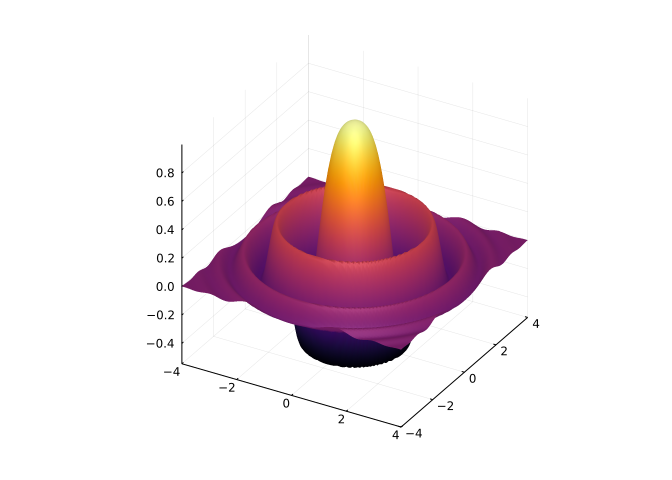
This function is differentiable and the gradient is given by:
\[ \nabla{f} = -2/5e^{-(x^2 + y^2)/5} (5\sin(x^2 + y^2) + \cos(x^2 + y^2)) \langle x, y \rangle. \]
This is zero at the origin, or when \(5\sin(x^2 + y^2) = -\cos(x^2 + y^2)\). The latter is \(0\) on circles of radius \(r\) where \(5\sin(r) = \cos(r)\) or \(r = \tan^{-1}(-1/5) + k\pi\) for \(k = 1, 2, \dots\). This matches the graph, where the extrema are on circles by symmetry. Imagine now, picking a value where the function takes a maximum and adding the tangent plane. As the gradient is \(\vec{0}\), this will be flat. The point at the origin will have the surface fall off from the tangent plane in each direction, whereas the other points, will have a circle where the tangent plane rests on the surface, but otherwise will fall off from the tangent plane. Characterizing this “falling off” will help to identify local maxima that are distinct.
Now consider the differentiable function \(f(x,y) = xy\), graphed below with the projections of the \(x\) and \(y\) axes:
f(x,y) = x*y
xs = ys = range(-3, 3, length=100)
surface(xs, ys, f, legend=false)
plot_parametric!(-4..4, t -> [t, 0, f(t, 0)], linewidth=5)
plot_parametric!(-4..4, t -> [0, t, f(0, t)], linewidth=5)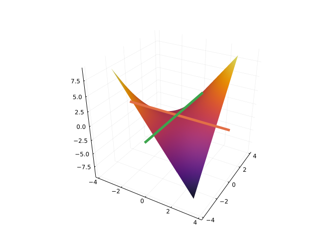
The extrema happen at the edges of the region. The gradient is \(\nabla{f} = \langle y, x \rangle\). This is \(\vec{0}\) only at the origin. At the origin, were we to imagine a tangent plane, the surface falls off in one direction but falls above in the other direction. Such a point is referred to as a saddle point. A saddle point for a continuous \(f:R^n \rightarrow R\) would be a critical point, \(\vec{a}\) where for any ball with non-zero radius about \(\vec{a}\), there are values where the function is greater than \(f(\vec{a})\) and values where the function is less.
To identify these through formulas, and not graphically, we could try and use the first derivative test along all paths through \(\vec{a}\), but this approach is better at showing something isn’t the case, like two paths to show non-continuity.
The generalization of the second derivative test is more concrete though. Recall, the second derivative test is about the concavity of the function at the critical point. When the concavity can be determined as non-zero, the test is conclusive; when the concavity is zero, the test is not conclusive. Similarly here:
The second Partial Derivative Test for \(f:R^2 \rightarrow R\).
Assume the first and second partial derivatives of \(f\) are defined and continuous; \(\vec{a}\) be a critical point of \(f\); \(H\) is the hessian matrix, \([f_{xx}\quad f_{xy};f_{xy}\quad f_{yy}]\), and \(d = \det(H) = f_{xx} f_{yy} - f_{xy}^2\) is the determinant of the Hessian matrix. Then:
- The function \(f\) has a local minimum at \(\vec{a}\) if \(f_{xx} > 0\) and \(d>0\),
- The function \(f\) has a local maximum at \(\vec{a}\) if \(f_{xx} < 0\) and \(d>0\),
- The function \(f\) has a saddle point at \(\vec{a}\) if \(d < 0\),
- Nothing can be said if \(d=0\).
The intuition behind a proof follows. The case when \(f_{xx} > 0\) and \(d > 0\) uses a consequence of these assumptions that for any non-zero vector \(\vec{x}\) it must be that \(x\cdot(Hx) > 0\) (positive definite) and the quadratic approximation \(f(\vec{a}+d\vec{x}) \approx f(\vec{a}) + \nabla{f}(\vec{a}) \cdot d\vec{x} + d\vec{x} \cdot (Hd\vec{x}) = f(\vec{a}) + d\vec{x} \cdot (Hd\vec{x})\), so for any \(d\vec{x}\) small enough, \(f(\vec{a}+d\vec{x}) \geq f(\vec{a})\). That is \(f(\vec{a})\) is a local minimum. Similarly, a proof for the local maximum follows by considering \(-f\). Finally, if \(d < 0\), then there are vectors, \(d\vec{x}\), for which \(d\vec{x} \cdot (Hd\vec{x})\) will have different signs, and along these vectors the function will be concave up/concave down.
Apply this to \(f(x,y) = xy\) at \(\vec{a} = \vec{0}\) we have \(f_{xx} = f_{yy} = 0\) and \(f_{xy} = 1\), so the determinant of the Hessian is \(-1\). By the second partial derivative test, this critical point is a saddle point, as seen from a previous graph.
Applying this to \(f(x,y) = e^{-(x^2 + y^2)/5} \cos(x^2 + y^2)\), we will use SymPy to compute the derivatives, as they get a bit involved:
fₖ(x,y) = exp(-(x^2 + y^2)/5) * cos(x^2 + y^2)
Hₖ = sympy.hessian(fₖ(x,y), (x,y))2×2 Matrix{Sym}:
8*x^2*exp(-x^2/5 - y^2/5)*sin(x^2 + y^2)/5 - 96*x^2*exp(-x^2/5 - y^2/5)*cos(x^2 + y^2)/25 - 2*exp(-x^2/5 - y^2/5)*sin(x^2 + y^2) - 2*exp(-x^2/5 - y^2/5)*cos(x^2 + y^2)/5 … 8*x*y*exp(-x^2/5 - y^2/5)*sin(x^2 + y^2)/5 - 96*x*y*exp(-x^2/5 - y^2/5)*cos(x^2 + y^2)/25
8*x*y*exp(-x^2/5 - y^2/5)*sin(x^2 + y^2)/5 - 96*x*y*exp(-x^2/5 - y^2/5)*cos(x^2 + y^2)/25 8*y^2*exp(-x^2/5 - y^2/5)*sin(x^2 + y^2)/5 - 96*y^2*exp(-x^2/5 - y^2/5)*cos(x^2 + y^2)/25 - 2*exp(-x^2/5 - y^2/5)*sin(x^2 + y^2) - 2*exp(-x^2/5 - y^2/5)*cos(x^2 + y^2)/5This is messy, but we only consider it at critical points. The point \((0,0)\) is graphically a local maximum. We can see from the Hessian, that the second partial derivative test will give the same characterization:
H₀₀ = subs.(Hₖ, x=>0, y=>0)2×2 Matrix{Sym}:
-2/5 0
0 -2/5Which satisfies:
H₀₀[1,1] < 0 && det(H₀₀) > 0trueNow consider \(\vec{a} = \langle \sqrt{2\pi + \tan^{-1}(-1/5)}, 0 \rangle\), a point on the first visible ring on the graph. The gradient vanishes here:
gradfₖ = diff.(fₖ(x,y), [x,y])
a = [sqrt(2PI + atan(-Sym(1)//5)), 0]
subs.(gradfₖ, x => a[1], y => a[2])2-element Vector{Sym}:
0
0But the test is inconclusive, as the determinant of the Hessian is \(0\):
a = [sqrt(PI + atan(-Sym(1)//5)), 0]
H_a = subs.(Hₖ, x => a[1], y => a[2])
det(H_a)(The test is inconclusive, as it needs the function to “fall away” from the tangent plane in all directions, in this case, along a circular curve, the function touches the tangent plane, so it doesn’t fall away.)
Characterize the critical points of \(f(x,y) = 4xy - x^4 - y^4\).
The critical points may be found by solving when the gradient is \(\vec{0}\):
fⱼ(x,y) = 4x*y - x^4 - y^4
gradfⱼ = diff.(fⱼ(x,y), [x,y])2-element Vector{Sym}:
-4*x^3 + 4*y
4*x - 4*y^3all_ptsⱼ = solve(gradfⱼ, [x,y])
ptsⱼ = filter(u -> all(isreal.(u)), all_ptsⱼ)3-element Vector{Tuple{Sym, Sym}}:
(-1, -1)
(0, 0)
(1, 1)There are \(3\) real critical points. To classify them we need the sign of \(f_{xx}\) and the determinant of the Hessian. We make a simple function to compute these, then apply it to each point using a comprehension:
Hⱼ = sympy.hessian(fⱼ(x,y), (x,y))
function classify(H, pt)
Ha = subs.(H, x .=> pt[1], y .=> pt[2])
(det=det(Ha), f_xx=Ha[1,1])
end
[classify(Hⱼ, pt) for pt in ptsⱼ]3-element Vector{NamedTuple{(:det, :f_xx), Tuple{Sym, Sym}}}:
(det = 128, f_xx = -12)
(det = -16, f_xx = 0)
(det = 128, f_xx = -12)We see the first and third points have positive determinant and negative \(f_{xx}\), so are relative maxima, and the second point has negative derivative, so is a saddle point. We graphically confirm this:
xs = ys = range(-3/2, 3/2, length=100)
p = surface(xs, ys, fⱼ, legend=false)
for pt ∈ ptsⱼ
scatter!(p, unzip([N.([pt...,fⱼ(pt...)])])...,
markercolor=:black, markersize=5) # add each pt on surface
end
p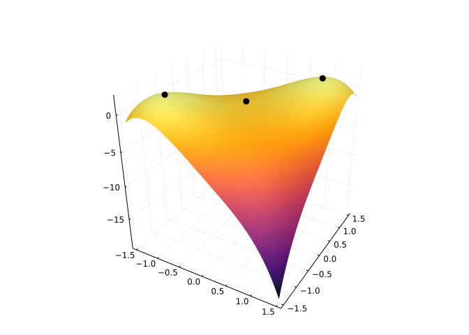
Consider the function \(f(x,y) = x^2 + 3y^2 -x\) over the region \(x^2 + y^2 \leq 1\). This is a continuous function over a closed set, so will have both an absolute maximum and minimum. Find these from an investigation of the critical points and the boundary points.
The gradient is easily found: \(\nabla{f} = \langle 2x - 1, 6y \rangle\), and is \(\vec{0}\) only at \(\vec{a} = \langle 1/2, 0 \rangle\). The Hessian is:
\[ H = \left[ \begin{array}{} 2 & 0\\ 0 & 6 \end{array} \right]. \]
At \(\vec{a}\) this has positive determinant and \(f_{xx} > 0\), so \(\vec{a}\) corresponds to a local minimum with values \(f(\vec{a}) = (1/2)^2 + 3(0) - 1/2 = -1/4\). The absolute maximum and minimum may occur here (well, not the maximum) or on the boundary, so that must be considered. In this case we can easily parameterize the boundary and turn this into the univariate case:
fₗ(x,y) = x^2 + 2y^2 - x
fₗ(v) = fₗ(v...)
gammaₗ(t) = [cos(t), sin(t)] # traces out x^2 + y^2 = 1 over [0, 2pi]
gₗ = fₗ ∘ gammaₗ
cpsₗ = find_zeros(gₗ', 0, 2pi) # critical points of g
append!(cpsₗ, [0, 2pi])
unique!(cpsₗ)
gₗ.(cpsₗ)5-element Vector{Float64}:
0.0
2.25
2.0
2.25
0.0We see that maximum value is 2.25 and that the interior point, \(\vec{a}\), will be where the minimum value occurs. To see exactly where the maximum occurs, we look at the values of gamma:
inds = [2,4]
cpsₗ[inds]2-element Vector{Float64}:
2.0943951023931953
4.1887902047863905These are multiples of \(\pi\):
cpsₗ[inds]/pi2-element Vector{Float64}:
0.6666666666666666
1.3333333333333333So we have the maximum occurs at the angles \(2\pi/3\) and \(4\pi/3\). Here we visualize, using a hacky trick of assigning NaN values to the function to avoid plotting outside the circle:
hₗ(x,y) = fₗ(x,y) * (x^2 + y^2 <= 1 ? 1 : NaN)hₗ (generic function with 1 method)xs = ys = range(-1,1, length=100)
surface(xs, ys, hₗ)
ts = cpsₗ # 2pi/3 and 4pi/3 by above
xs, ys = cos.(ts), sin.(ts)
scatter!(xs, ys, fₗ)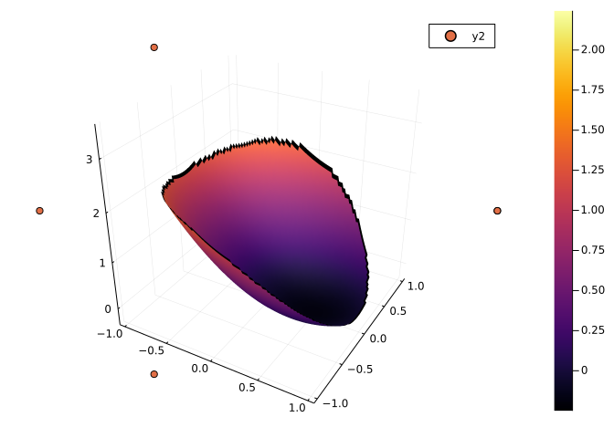
A contour plot also shows that some - and only one - extrema happens on the interior:
xs = ys = range(-1,1, length=100)
contour(xs, ys, hₗ)
The extrema are identified by the enclosing regions, in this case the one around the point \((1/2, 0)\).
This is from Strang p 506.
We have three points in the plane, \((x_1, y_1)\), \((x_2, y_2)\), and \((x_3,y_3)\). A point \(p=(p_x, p_y)\) will have \(3\) distances \(d_1\), \(d_2\), and \(d_3\). Broadly speaking we want to minimize to find the point \(p\) “nearest” the three fixed points within the triangle. Locating a facility so that it can service \(3\) separate cities might be one application. The answer depends on the notion of what measure of distance to use.
If the measure is the Euclidean distance, then \(d_i^2 = (p_x - x_i)^2 + (p_y - y_i)^2\). If we sought to minimize \(d_1^2 + d_2^2 + d_3^2\), then we would proceed as follows:
@syms x1 y1 x2 y2 x3 y3
d2(p,x) = (p[1] - x[1])^2 + (p[2]-x[2])^2
d2_1, d2_2, d2_3 = d2((x,y), (x1, y1)), d2((x,y), (x2, y2)), d2((x,y), (x3, y3))
exₛ = d2_1 + d2_2 + d2_3We then find the gradient, and solve for when it is \(\vec{0}\):
gradfₛ = diff.(exₛ, [x,y])
xstarₛ = solve(gradfₛ, [x,y])Dict{Any, Any} with 2 entries:
x => x1/3 + x2/3 + x3/3
y => y1/3 + y2/3 + y3/3There is only one critical point, so must be a minimum.
We confirm this by looking at the Hessian and noting \(H_{11} > 0\):
Hₛ = subs.(hessian(exₛ, [x,y]), x=>xstarₛ[x], y=>xstarₛ[y])2×2 Matrix{Sym}:
6 0
0 6As it occurs at \((\bar{x}, \bar{y})\) where \(\bar{x} = (x_1 + x_2 + x_3)/3\) and \(\bar{y} = (y_1+y_2+y_3)/3\) - the averages of the three values - the critical point is an interior point of the triangle.
As mentioned by Strang, the real problem is to minimize \(d_1 + d_2 + d_3\). A direct approach with SymPy - just replacing d2 above with the square root` fails. Consider instead the gradient of \(d_1\), say. To avoid square roots, this is taken implicitly from \(d_1^2\):
\[ \frac{\partial}{\partial{x}}(d_1^2) = 2 d_1 \frac{\partial{d_1}}{\partial{x}}. \]
But computing directly from the expression yields \(2(x - x_1)\) Solving, yields:
\[ \frac{\partial{d_1}}{\partial{x}} = \frac{(x-x_1)}{d_1}, \quad \frac{\partial{d_1}}{\partial{y}} = \frac{(y-y_1)}{d_1}. \]
The gradient is then \((\vec{p} - \vec{x}_1)/\|\vec{p} - \vec{x}_1\|\), a unit vector, call it \(\hat{u}_1\). Similarly for \(\hat{u}_2\) and \(\hat{u}_3\).
Let \(f = d_1 + d_2 + d_3\). Then \(\nabla{f} = \hat{u}_1 + \hat{u}_2 + \hat{u}_3\). At the minimum, the gradient is \(\vec{0}\), so the three unit vectors must cancel. This can only happen if the three make a “peace” sign with angles \(120^\circ\) between them. To find the minimum then within the triangle, this point and the boundary must be considered, when this point falls outside the triangle.
Here is a triangle, where the minimum would be within the triangle:
usₛ = [[cos(t), sin(t)] for t in (0, 2pi/3, 4pi/3)]
polygon(ps) = unzip(vcat(ps, ps[1:1])) # easier way to plot a polygon
pₛ = scatter([0],[0], markersize=2, legend=false, aspect_ratio=:equal)
asₛ = (1,2,3)
plot!(polygon([a*u for (a,u) in zip(asₛ, usₛ)])...)
[arrow!([0,0], a*u, alpha=0.5) for (a,u) in zip(asₛ, usₛ)]
pₛ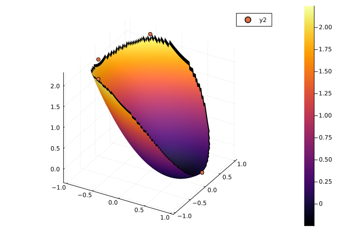
For this triangle we find the Steiner point outside of the triangle.
asₛ₁ = (1, -1, 3)
scatter([0],[0], markersize=2, legend=false)
psₛₗ = [a*u for (a,u) in zip(asₛ₁, usₛ)]
plot!(polygon(psₛₗ)...)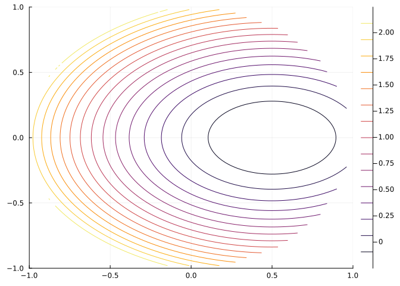
Let’s see where the minimum distance point is by constructing a plot. The minimum must be on the boundary, as the only point where the gradient vanishes is the origin, not in the triangle. The plot of the triangle has a contour plot of the distance function, so we see clearly that the minimum happens at the point [0.5, -0.866025]. On this plot, we drew the gradient at some points along the boundary. The gradient points in the direction of greatest increase - away from the minimum. That the gradient vectors have a non-zero projection onto the edges of the triangle in a direction pointing away from the point indicates that the function d would increase if moved along the boundary in that direction, as indeed it does.
euclid_dist(x; ps=psₛₗ) = sum(norm(x-p) for p in ps)
euclid_dist(x,y; ps=psₛₗ) = euclid_dist([x,y]; ps=ps)euclid_dist (generic function with 2 methods)xs = range(-1.5, 1.5, length=100)
ys = range(-3, 1.0, length=100)
p = plot(polygon(psₛₗ)..., linewidth=3, legend=false)
scatter!(p, unzip(psₛₗ)..., markersize=3)
contour!(p, xs, ys, euclid_dist)
# add some gradients along boundary
li(t, p1, p2) = p1 + t*(p2-p1) # t in [0,1]
for t in range(1/100, 1/2, length=3)
pt = li(t, psₛₗ[2], psₛₗ[3])
arrow!(pt, ForwardDiff.gradient(euclid_dist, pt))
pt = li(t, psₛₗ[2], psₛₗ[1])
arrow!(pt, ForwardDiff.gradient(euclid_dist, pt))
end
p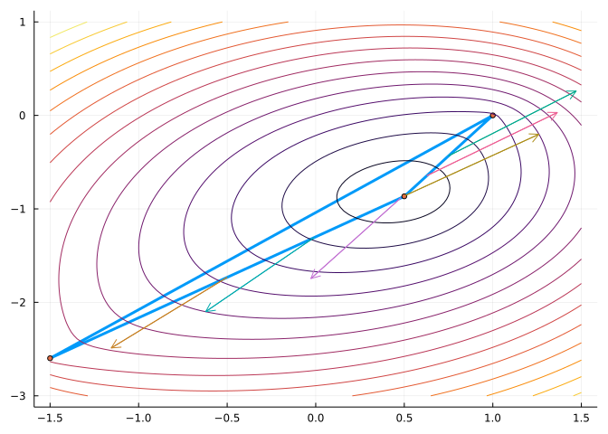
The following graph, shows distance along each edge:
li(t, p1, p2) = p1 + t*(p2-p1)
p = plot(legend=false)
for i in 1:2, j in (i+1):3
plot!(p, t -> euclid_dist(li(t, psₛₗ[i], psₛₗ[j]); ps=psₛₗ), 0, 1)
end
p
The smallest value is when \(t=0\) or \(t=1\), so at one of the points, as li is defined above.
We know that two points determine a line. What happens when there are more than two points? This is common in statistics where a bivariate data set (pairs of points \((x,y)\)) are summarized through a linear model \(\mu_{y|x} = \alpha + \beta x\), That is the average value for \(y\) given a particular \(x\) value is given through the equation of a line. The data is used to identify what the slope and intercept are for this line. We consider a simple case - \(3\) points. The case of \(n \geq 3\) being similar.
We have a line \(l(x) = \alpha + \beta(x)\) and three points \((x_1, y_1)\), \((x_2, y_2)\), and \((x_3, y_3)\). Unless these three points happen to be collinear, they can’t possibly all lie on the same line. So to approximate a relationship by a line requires some inexactness. One measure of inexactness is the vertical distance to the line:
\[ d1(\alpha, \beta) = |y_1 - l(x_1)| + |y_2 - l(x_2)| + |y_3 - l(x_3)|. \]
Another might be the vertical squared distance to the line:
\[ \begin{align*} d2(\alpha, \beta) &= (y_1 - l(x_1))^2 + (y_2 - l(x_2))^2 + (y_3 - l(x_3))^2 \\ &= (y1 - (\alpha + \beta x_1))^2 + (y3 - (\alpha + \beta x_3))^2 + (y3 - (\alpha + \beta x_3))^2 \end{align*} \]
Another might be the shortest distance to the line:
\[ d3(\alpha, \beta) = \frac{\beta x_1 - y_1 + \alpha}{\sqrt{1 + \beta^2}} + \frac{\beta x_2 - y_2 + \alpha}{\sqrt{1 + \beta^2}} + \frac{\beta x_3 - y_3 + \alpha}{\sqrt{1 + \beta^2}}. \]
The method of least squares minimizes the second one of these. That is, it chooses \(\alpha\) and \(\beta\) that make the expression a minimum.
@syms xₗₛ[1:3] yₗₛ[1:3] α β
li(x, alpha, beta) = alpha + beta * x
d₂(alpha, beta) = sum((y - li(x, alpha, beta))^2 for (y,x) in zip(yₗₛ, xₗₛ))
d₂(α, β)To identify \(\alpha\) and \(\beta\) we find the gradient:
grad_d₂ = diff.(d₂(α, β), [α, β])2-element Vector{Sym}:
2⋅xₗₛ₁⋅β + 2⋅xₗₛ₂⋅β + 2⋅xₗₛ₃⋅β - 2⋅yₗₛ₁ - 2⋅yₗₛ₂ - 2⋅yₗₛ₃ + 6⋅α
-2*xₗₛ₁*(-xₗₛ₁*β + yₗₛ₁ - α) - 2*xₗₛ₂*(-xₗₛ₂*β + yₗₛ₂ - α) - 2*xₗₛ₃*(-xₗₛ₃*β + yₗₛ₃ - α)outₗₛ = solve(grad_d₂, [α, β])Dict{Any, Any} with 2 entries:
β => (2*xₗₛ₁*yₗₛ₁ - xₗₛ₁*yₗₛ₂ - xₗₛ₁*yₗₛ₃ - xₗₛ₂*yₗₛ₁ + 2*xₗₛ₂*yₗₛ₂ - xₗₛ₂*yₗ…
α => (xₗₛ₁^2*yₗₛ₂ + xₗₛ₁^2*yₗₛ₃ - xₗₛ₁*xₗₛ₂*yₗₛ₁ - xₗₛ₁*xₗₛ₂*yₗₛ₂ - xₗₛ₁*xₗₛ₃…As found, the formulas aren’t pretty. If \(x_1 + x_2 + x_3 = 0\) they simplify. For example:
subs(outₗₛ[β], sum(xₗₛ) => 0)Let \(\vec{x} = \langle x_1, x_2, x_3 \rangle\) and \(\vec{y} = \langle y_1, y_2, y_3 \rangle\) this is simply \((\vec{x} \cdot \vec{y})/(\vec{x}\cdot \vec{x})\), a formula that will generalize to \(n > 3\). The assumption is not a restriction - it comes about by subtracting the mean, \(\bar{x} = (x_1 + x_2 + x_3)/3\), from each \(x\) term (and similarly subtract \(\bar{y}\) from each \(y\) term). A process called “centering.”
With this observation, the formulas can be re-expressed through:
\[ \beta = \frac{\sum{x_i - \bar{x}}(y_i - \bar{y})}{\sum(x_i-\bar{x})^2}, \quad \alpha = \bar{y} - \beta \bar{x}. \]
Relative to the centered values, this may be viewed as a line through \((\bar{x}, \bar{y})\) with slope given by \((\vec{x}-\bar{x})\cdot(\vec{y}-\bar{y}) / \|\vec{x}-\bar{x}\|\).
As an example, if the point are \((1,1), (2,3), (5,8)\) we get:
[k => subs(v, xₗₛ[1]=>1, yₗₛ[1]=>1, xₗₛ[2]=>2, yₗₛ[2]=>3,
xₗₛ[3]=>5, yₗₛ[3]=>8) for (k,v) in outₗₛ]2-element Vector{Pair{Sym, Sym}}:
β => 45/26
α => -8/13As seen in the examples above, extrema may be identified analytically by solving for when the gradient is \(0\). Here we discuss some numeric algorithms for finding extrema.
An algorithm to identify where a surface is at its minimum is gradient descent. The gradient points in the direction of the steepest ascent of the surface and the negative gradient the direction of the steepest descent. To move to a minimum then, it make intuitive sense to move in the direction of the negative gradient. How far? That is a different question and one with different answers. Let’s formulate the movement first, then discuss how far.
Let \(\vec{x}_0\), \(\vec{x}_1\), \(\dots\), \(\vec{x}_n\) be the position of the algorithm for \(n\) steps starting from an initial point \(\vec{x}_0\). The difference between these points is given by:
\[ \vec{x}_{n+1} = \vec{x}_n - \gamma \nabla{f}(\vec{x}_n), \]
where \(\gamma\) is some scaling factor for the gradient. The above quantifies the idea: to go from \(\vec{x}_n\) to \(\vec{x}_{n+1}\), move along \(-\nabla{f}\) by a certain amount.
Let \(\Delta_x =\vec{x}_{n}- \vec{x}_{n-1}\) and \(\Delta_y = \nabla{f}(\vec{x}_{n}) - \nabla{f}(\vec{x}_{n-1})\) A variant of the Barzilai-Borwein method is to take \(\gamma_n = | \Delta_x \cdot \Delta_y / \Delta_y \cdot \Delta_y |\).
To illustrate, take \(f(x,y) = -(x^2 + y^2) \cdot e^{-(2x^2 + y^2)}\) and a starting point \(\langle 1, 1 \rangle\). We have, starting with \(\gamma_0 = 1\) there are \(5\) steps taken:
f₂(x,y) = -exp(-((x-1)^2 + 2(y-1/2)^2))
f₂(x) = f₂(x...)
xs₂ = [[0.0, 0.0]] # we store a vector
gammas₂ = [1.0]
for n in 1:5
xn = xs₂[end]
gamma₀ = gammas₂[end]
xn1 = xn - gamma₀ * gradient(f₂)(xn)
dx, dy = xn1 - xn, gradient(f₂)(xn1) - gradient(f₂)(xn)
gamman1 = abs( (dx ⋅ dy) / (dy ⋅ dy) )
push!(xs₂, xn1)
push!(gammas₂, gamman1)
end
[(x, f₂(x)) for x in xs₂]6-element Vector{Tuple{Vector{Float64}, Float64}}:
([0.0, 0.0], -0.22313016014842982)
([0.44626032029685964, 0.44626032029685964], -0.7316862045596354)
([0.5719399641782019, 0.4706543959065717], -0.8311394210020312)
([1.3127598757955443, 0.5722280351701136], -0.8974009578884475)
([0.9982224839581173, 0.4269509740243237], -0.9893813007474934)
([0.9996828943781475, 0.5469853998120562], -0.9955943772073014)We now visualize, using the Contour package to draw the contour lines in the \(x-y\) plane:
function surface_contour(xs, ys, f; offset=0)
p = surface(xs, ys, f, legend=false, fillalpha=0.5)
## we add to the graphic p, then plot
zs = [f(x,y) for x in xs, y in ys] # reverse order for use with Contour package
for cl in levels(contours(xs, ys, zs))
lvl = level(cl) # the z-value of this contour level
for line in lines(cl)
_xs, _ys = coordinates(line) # coordinates of this line segment
_zs = offset * _xs
plot!(p, _xs, _ys, _zs, alpha=0.5) # add curve on x-y plane
end
end
p
end
offset = 0
us = vs = range(-1, 2, length=100)
surface_contour(vs, vs, f₂, offset=offset)
pts = [[pt..., offset] for pt in xs₂]
scatter!(unzip(pts)...)
plot!(unzip(pts)..., linewidth=3)
A variant of Newton’s method can be used to minimize a function \(f:R^2 \rightarrow R\). We look for points where both partial derivatives of \(f\) vanish. Let \(g(x,y) = \partial f/\partial x(x,y)\) and \(h(x,y) = \partial f/\partial y(x,y)\). Then applying Newton’s method, as above to solve simultaneously for when \(g=0\) and \(h=0\), we considered this matrix:
\[ M = [\nabla{g}'; \nabla{h}'], \]
and had a step expressible in terms of the inverse of \(M\) as \(M^{-1} [g; h]\). In terms of the function \(f\), this step is \(H^{-1}\nabla{f}\), where \(H\) is the Hessian matrix. Newton’s method then becomes:
\[ \vec{x}_{n+1} = \vec{x}_n - [H_f(\vec{x}_n]^{-1} \nabla(f)(\vec{x}_n). \]
The Wikipedia page states where applicable, Newton’s method converges much faster towards a local maximum or minimum than gradient descent.
We apply it to the task of characterizing the following function, which has a few different peaks over the region \([-3,3] \times [-2,2]\):
function peaks(x, y)
z = 3 * (1 - x)^2 * exp(-x^2 - (y + 1)^2)
z += -10 * (x / 5 - x^3 - y^5) * exp(-x^2 - y^2)
z += -1/3 * exp(-(x+1)^2 - y^2)
return z
end
peaks(v) = peaks(v...)peaks (generic function with 2 methods)xs = range(-3, stop=3, length=100)
ys = range(-2, stop=2, length=100)
Ps = surface(xs, ys, peaks, legend=false)
Pc = contour(xs, ys, peaks, legend=false)
plot(Ps, Pc, layout=2) # combine plots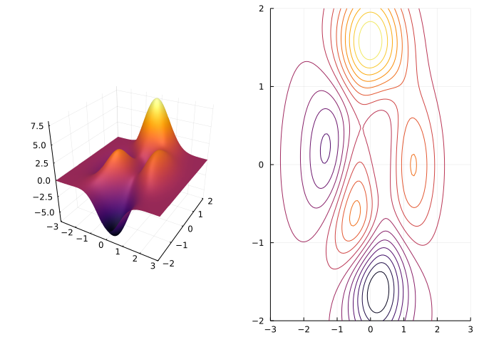
As we will solve for the critical points numerically, we consider the contour plot as well, as it shows better where the critical points are.
Over this region we see clearly 5 peaks or valleys: near \((0, 1.5)\), near \((1.2, 0)\), near \((0.2, -1.8)\), near \((-0.5, -0.8)\), and near \((-1.2, 0.2)\). To classify the \(5\) critical points we need to first identify them, then compute the Hessian, and then, possibly compute \(f_xx\) at the point. Here we do so for one of them using a numeric approach.
For concreteness, consider the peak or valley near \((0,1.5)\). We use Newton’s method to numerically compute the critical point. The Newton step, specialized here is:
function newton_stepₚ(f, x)
M = ForwardDiff.hessian(f, x)
b = ForwardDiff.gradient(f, x)
x - M \ b
endnewton_stepₚ (generic function with 1 method)We perform \(3\) steps of Newton’s method, and see that it has found a critical point.
xₚ = [0, 1.5]
xₚ = newton_stepₚ(peaks, xₚ)
xₚ = newton_stepₚ(peaks, xₚ)
xₚ = newton_stepₚ(peaks, xₚ)
xₚ, ForwardDiff.gradient(peaks, xₚ)([-0.009317581959954116, 1.5813679629389998], [1.734723475976807e-17, -6.9111383282915995e-15])The Hessian at this point is given by:
Hₚ = ForwardDiff.hessian(peaks, xₚ)2×2 Matrix{Float64}:
-16.2944 0.493227
0.493227 -32.413From which we see:
fxx = Hₚ[1,1]
d = det(Hₚ)
fxx, d(-16.29442261058989, 527.9079596128478)Consequently we have a local maximum at this critical point.
The Optim.jl package provides efficient implementations of these two numeric methods, and others.
We considered the problem of maximizing a function over a closed region. This maximum is achieved at a critical point or a boundary point. Investigating the critical points isn’t so difficult and the second partial derivative test can help characterize the points along the way, but characterizing the boundary points usually involves parameterizing the boundary, which is not always so easy. However, if we put this problem into a more general setting a different technique becomes available.
The different setting is: maximize \(f(x,y)\) subject to the constraint \(g(x,y) = k\). The constraint can be used to describe the boundary used previously.
Why does this help? The key is something we have seen prior: If \(g\) is differentiable, and we take \(\nabla{g}\), then it will point at directions orthogonal to the level curve \(g(x,y) = 0\). (Parameterize the curve, then \((g\circ\vec{r})(t) = 0\) and so the chain rule has \(\nabla{g}(\vec{r}(t)) \cdot \vec{r}'(t) = 0\).) For example, consider the function \(g(x,y) = x^2 +2y^2 - 1\). The level curve \(g(x,y) = 0\) is an ellipse. Here we plot the level curve, along with a few gradient vectors at points satisfying \(g(x,y) = 0\):
g(x,y) = x^2 + 2y^2 -1
g(v) = g(v...)
xs = range(-3, 3, length=100)
ys = range(-1, 4, length=100)
p = plot(aspect_ratio=:equal, legend=false)
contour!(xs, ys, g, levels=[0])
gi(x) = sqrt(1/2*(1-x^2)) # solve for y in terms of x
pts = [[x, gi(x)] for x in (-3/4, -1/4, 1/4, 3/4)]
for pt in pts
arrow!(pt, ForwardDiff.gradient(g, pt) )
end
p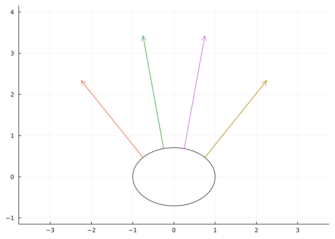
From the plot we see the key property that \(g\) is orthogonal to the level curve.
Now consider \(f(x,y)\), a function we wish to maximize. The gradient points in the direction of greatest increase, provided \(f\) is smooth. We are interested in the value of this gradient along the level curve of \(g\). Consider this figure representing a portion of the level curve, it’s tangent, normal, the gradient of \(f\), and the contours of \(f\):
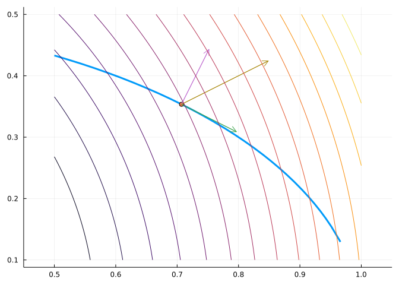
We can identify the tangent, the normal, and subsequently the gradient of \(f\). Is the point drawn a maximum of \(f\) subject to the constraint \(g\)?
The answer is no, but why? By adding the contours of \(f\), we see that moving along the curve from this point will increase or decrease \(f\), depending on which direction we move in. As the gradient is the direction of greatest increase, we can see that the projection of the gradient on the tangent will point in a direction of increase.
It isn’t just because the point picked was chosen to make a pretty picture, and not be a maximum. Rather, the fact that \(\nabla{f}\) has a non-trivial projection onto the tangent vector. What does it say if we move the point in the direction of this projection?
The gradient points in the direction of greatest increase. If we first move in one component of the gradient we will increase, just not as fast. This is because the directional derivative in the direction of the tangent will be non-zero. In the picture, if we were to move the point to the right along the curve \(f(x,y)\) will increase.
Now consider this figure at a different point of the figure:
We can still identify the tangent and normal directions. What is different about this point is that local movement on the constraint curve is also local movement on the contour line of \(f\), so \(f\) doesn’t increase or decrease here, as it would if this point were an extrema along the contraint. The key to seeing this is the contour lines of \(f\) are tangent to the constraint. The respective gradients are orthogonal to their tangent lines, and in dimension \(2\), this implies they are parallel to each other.
The method of Lagrange multipliers: To optimize \(f(x,y)\) subject to a constraint \(g(x,y) = k\) we solve for all simultaneous solutions to
\[ \begin{align} \nabla{f}(x,y) &= \lambda \nabla{g}(x,y), \text{and}\\ g(x,y) &= k. \end{align} \]
These possible points are evaluated to see if they are maxima or minima.
The method will not work if \(\nabla{g} = \vec{0}\) or if \(f\) and \(g\) are not differentiable.
We consider again the problem of maximizing all rectangles subject to the perimeter being \(20\). We have seen this results in a square. This time we use the Lagrange multiplier technique. We have two equations:
\[ A(x,y) = xy, \quad P(x,y) = 2x + 2y = 25. \]
We see \(\nabla{A} = \lambda \nabla{P}\), or \(\langle y, x \rangle = \lambda \langle 2, 2\rangle\). We see the solution has \(x = y\) and from the constraint \(x=y = 5\).
This is clearly the maximum for this problem, though the Lagrange technique does not imply that, it only identifies possible extrema.
We can reverse the question: what are the ranges for the perimeter when the area is a fixed value of \(25\)? We have:
\[ P(x,y) = 2x + 2y, \quad A(x,y) = xy = 25. \]
Now we look for \(\nabla{P} = \lambda \nabla{A}\) and will get, as the last example, that \(\langle 2, 2 \rangle = \lambda \langle y, x\rangle\). So \(x=y\) and from the constraint \(x=y=5\).
However this is not the maximum perimeter, but rather the minimal perimeter. The maximum is \(\infty\), which comes about in the limit by considering long skinny rectangles.
An slightly different formulation of the Lagrange method is to combine the equation and the constraint into one equation:
\[ L(x,y,\lambda) = f(x,y) - \lambda (g(x,y) - k). \]
The we have
\[ \begin{align} \frac{\partial L}{\partial{x}} &= \frac{\partial{f}}{\partial{x}} - \lambda \frac{\partial{g}}{\partial{x}}\\ \frac{\partial L}{\partial{y}} &= \frac{\partial{f}}{\partial{y}} - \lambda \frac{\partial{g}}{\partial{y}}\\ \frac{\partial L}{\partial{\lambda}} &= 0 + (g(x,y) - k). \end{align} \]
But if the Lagrange condition holds, each term is \(0\), so Lagrange’s method can be seen as solving for point \(\nabla{L} = \vec{0}\). The optimization problem in two variables with a constraint becomes a problem of finding and classifying zeros of a function with three variables.
Apply this to the optimization problem:
Find the extrema of \(f(x,y) = x^2 - y^2\) subject to the constraint \(g(x,y) = x^2 + y^2 = 1\).
We have:
\[ L(x, y, \lambda) = f(x,y) - \lambda(g(x,y) - 1) \]
We can solve for \(\nabla{L} = \vec{0}\) by hand, but we do so symbolically:
@syms lambda
fₗₐ(x, y) = x^2 - y^2
gₗₐ(x, y) = x^2 + y^2
Lₗₐ(x, y, lambda) = fₗₐ(x,y) - lambda * (gₗₐ(x,y) - 1)
dsₗₐ = solve(diff.(Lₗₐ(x, y, lambda), [x, y, lambda]))4-element Vector{Dict{Any, Any}}:
Dict(x => 0, lambda => -1, y => -1)
Dict(x => 0, lambda => -1, y => 1)
Dict(x => -1, lambda => 1, y => 0)
Dict(x => 1, lambda => 1, y => 0)This has \(4\) easy solutions, here are the values at each point:
[fₗₐ(d[x], d[y]) for d in dsₗₐ]4-element Vector{Sym}:
-1
-1
1
1So \(1\) is a maximum value and \(-1\) a minimum value.
Consider a slightly different problem: What shape should a rope (curve) of fixed length make to maximize the area between the rope and \(x\) axis?
Let \(L\) be the length of the rope and suppose \(y(x)\) describes the curve. Then we wish to
\[ \text{Maximize } \int y(x) dx, \quad\text{subject to } \int \sqrt{1 + y'(x)^2} dx = L. \]
The latter being the formula for arc length. This is very much like a optimization problem that Lagrange’s method could help solve, but with one big difference: the answer is not a point but a function.
This is a variant of Dido’s problem, described by Bandle as
Dido’s problem: The Roman poet Publius Vergilius Maro (70–19 B.C.) tells in his epic Aeneid the story of queen Dido, the daughter of the Phoenician king of the 9th century B.C. After the assassination of her husband by her brother she fled to a haven near Tunis. There she asked the local leader, Yarb, for as much land as could be enclosed by the hide of a bull. Since the deal seemed very modest, he agreed. Dido cut the hide into narrow strips, tied them together and encircled a large tract of land which became the city of Carthage. Dido faced the following mathematical problem, which is also known as the isoperimetric problem: Find among all curves of given length the one which encloses maximal area. Dido found intuitively the right answer.
The problem as stated above and method of solution follows notes by Wang though Bandle attributes the ideas back to a 19-year old Lagrange in a letter to Euler.
The method of solution will be to assume we have the function and then characterize this function in such a way that it can be identified.
Following Lagrange, we generalize the problem to the following: maximize \(\int_{x_0}^{x_1} f(x, y(x), y'(x)) dx\) subject to a constraint \(\int_{x_0}^{x_1} g(x,y(x), y'(x)) dx = K\). Suppose \(y(x)\) is a solution.
The starting point is a perturbation: \(\hat{y}(x) = y(x) + \epsilon_1 \eta_1(x) + \epsilon_2 \eta_2(x)\). There are two perturbation terms, were only one term added, then the perturbation may make \(\hat{y}\) not satisfy the constraint, the second term is used to ensure the constraint is not violated. If \(\hat{y}\) is to be a possible solution to our problem, we would want \(\hat{y}(x_0) = \hat{y}(x_1) = 0\), as it does for \(y(x)\), so we assume \(\eta_1\) and \(\eta_2\) satisfy this boundary condition.
With this notation, and fixing \(y\) we can re-express the equations in terms ot \(\epsilon_1\) and \(\epsilon_2\):
\[ \begin{align} F(\epsilon_1, \epsilon_2) &= \int f(x, \hat{y}, \hat{y}') dx = \int f(x, y + \epsilon_1 \eta_1 + \epsilon_2 \eta_2, y' + \epsilon_1 \eta_1' + \epsilon_2 \eta_2') dx,\\ G(\epsilon_1, \epsilon_2) &= \int g(x, \hat{y}, \hat{y}') dx = \int g(x, y + \epsilon_1 \eta_1 + \epsilon_2 \eta_2, y' + \epsilon_1 \eta_1' + \epsilon_2 \eta_2') dx. \end{align} \]
Then our problem is restated as:
\[ \text{Maximize } F(\epsilon_1, \epsilon_2) \text{ subject to } G(\epsilon_1, \epsilon_2) = L. \]
Now, Lagrange’s method can be employed. This will be fruitful - even though we know the answer - it being \(\epsilon_1 = \epsilon_2 = 0\)!
Forging ahead, we compute \(\nabla{F}\) and \(\lambda \nabla{G}\) and set \(\epsilon_1 = \epsilon_2 = 0\) where the two are equal. This will lead to a description of \(y\) in terms of \(y'\).
Lagrange’s method has:
\[ \frac{\partial{F}}{\partial{\epsilon_1}}(0,0) - \lambda \frac{\partial{G}}{\partial{\epsilon_1}}(0,0) = 0, \text{ and } \frac{\partial{F}}{\partial{\epsilon_2}}(0,0) - \lambda \frac{\partial{G}}{\partial{\epsilon_2}}(0,0) = 0. \]
Computing just the first one, we have using the chain rule and assuming interchanging the derivative and integral is possible:
\[ \begin{align} \frac{\partial{F}}{\partial{\epsilon_1}} &= \int \frac{\partial}{\partial{\epsilon_1}}( f(x, y + \epsilon_1 \eta_1 + \epsilon_2 \eta_2, y' + \epsilon_1 \eta_1' + \epsilon_2 \eta_2')) dx\\ &= \int \left(\frac{\partial{f}}{\partial{y}} \eta_1 + \frac{\partial{f}}{\partial{y'}} \eta_1'\right) dx\quad\quad(\text{from }\nabla{f} \cdot \langle 0, \eta_1, \eta_1'\rangle)\\ &=\int \eta_1 \left(\frac{\partial{f}}{\partial{y}} - \frac{d}{dx}\frac{\partial{f}}{\partial{y'}}\right) dx. \end{align} \]
The last line by integration by parts: $u’(x) v(x) dx = (u v)(x)_{x_0}^{x_1} - u(x) v(x) dx = - u(x) v(x) dx $. The last lines, as \(\eta_1 = 0\) at \(x_0\) and \(x_1\) by assumption. We get:
\[ 0 = \int \eta_1\left(\frac{\partial{f}}{\partial{y}} - \frac{d}{dx}\frac{\partial{f}}{\partial{y'}}\right). \]
Similarly were \(G\) considered, we would find a similar statement. Setting \(L(x, y, y') = f(x, y, y') - \lambda g(x, y, y')\), the combination of terms gives:
\[ 0 = \int \eta_1\left(\frac{\partial{L}}{\partial{y}} - \frac{d}{dx}\frac{\partial{L}}{\partial{y'}}\right) dx. \]
Since \(\eta_1\) is arbitrary save for its boundary conditions, under smoothness conditions on \(L\) this will imply the rest of the integrand must be \(0\).
That is, If \(y(x)\) is a maximizer of \(\int_{x_0}^{x_1} f(x, y, y')dx\) and sufficiently smooth over \([x_0, x_1]\) and \(y(x)\) satisfies the constraint \(\int_{x_0}^{x_1} g(x, y, y')dx = K\) then there exists a constant \(\lambda\) such that \(L = f -\lambda g\) will satisfy:
\[ \frac{d}{dx}\frac{\partial{L}}{\partial{y'}} - \frac{\partial{L}}{\partial{y}} = 0. \]
If \(\partial{L}/\partial{x} = 0\), this simplifies to the Beltrami identity:
\[ L - y' \frac{\partial{L}}{\partial{y'}} = C.\quad(\text{Beltrami identity}) \]
For Dido’s problem, \(f(x,y,y') = y\) and \(g(x, y, y') = \sqrt{1 + y'^2}\), so \(L = y - \lambda\sqrt{1 + y'^2}\) will have \(0\) partial derivative with respect to \(x\). Using the Beltrami identify we have:
\[ (y - \lambda\sqrt{1 + y'^2}) - \lambda y' \frac{2y'}{2\sqrt{1 + y'^2}} = C. \]
by multiplying through by the denominator and squaring to remove the square root, a quadratic equation in \(y'^2\) can be found. This can be solved to give:
\[ y' = \frac{dy}{dx} = \sqrt{\frac{\lambda^2 -(y + C)^2}{(y+C)^2}}. \]
Here is a snippet of SymPy code to verify the above:
@vars y y′ λ C
ex = Eq(-λ*y′^2/sqrt(1 + y′^2) + λ*sqrt(1 + y′^2), C + y)
Δ = sqrt(1 + y′^2) / (C+y)
ex1 = Eq(simplify(ex.lhs()*Δ), simplify(ex.rhs() * Δ))
ex2 = Eq(ex1.lhs()^2 - 1, simplify(ex1.rhs()^2) - 1)Now \(y'\) can be integrated using the substitution \(y + C = \lambda \cos\theta\) to give: \(-\lambda\int\cos\theta d\theta = x + D\), \(D\) some constant. That is:
\[ \begin{align} x + D &= - \lambda \sin\theta\\ y + C &= \lambda\cos\theta. \end{align} \]
Squaring gives the equation of a circle: \((x +D)^2 + (y+C)^2 = \lambda^2\).
We center and rescale the problem so that \(x_0 = -1, x_1 = 1\). Then \(L > 2\) as otherwise the rope is too short. From here, we describe the radius and center of the circle.
We have \(y=0\) at \(x=1\) and \(-1\) giving:
\[ \begin{align} (-1 + D)^2 + (0 + C)^2 &= \lambda^2\\ (+1 + D)^2 + (0 + C)^2 &= \lambda^2. \end{align} \]
Squaring out and solving gives \(D=0\), \(1 + C^2 = \lambda^2\). That is, an arc of circle with radius \(1+C^2\) and centered at \((0, -C)\).
\[ x^2 + (y + C)^2 = 1 + C^2. \]
Now to identify \(C\) in terms of \(L\). \(L\) is the length of arc of circle of radius \(r =\sqrt{1 + C^2}\) and angle \(2\theta\), so \(L = 2r\theta\) But using the boundary conditions in the equations for \(x\) and \(y\) gives \(\tan\theta = 1/C\), so \(L = 2\sqrt{1 + C^2}\tan^{-1}(1/C)\) which can be solved for \(C\) provided \(L \geq 2\).
Consider now the case of maximizing \(f(x,y,z)\) subject to \(g(x,y,z)=c\) and \(h(x,y,z) = d\). Can something similar be said to characterize potential values for this to occur? Trying to describe where \(g(x,y,z) = c\) and \(h(x,y,z)=d\) in general will prove difficult. The easy case would be it the two equations were linear, in which case they would describe planes. Two non-parallel planes would intersect in a line. If the general case, imagine the surfaces locally replaced by their tangent planes, then their intersection would be a line, and this line would point in along the curve given by the intersection of the surfaces formed by the contraints. This line is similar to the tangent line in the \(2\)-variable case. Now if \(\nabla{f}\), which points in the direction of greatest increase of \(f\), had a non-zero projection onto this line, then moving the point in that direction along the line would increase \(f\) and still leave the point following the contraints. That is, if there is a non-zero directional derivative the point is not a maximum.
The tangent planes are orthogonal to the vectors \(\nabla{g}\) and \(\nabla{h}\), so in this case parallel to \(\nabla{g} \times \nabla{h}\). The condition that \(\nabla{f}\) be orthogonal to this vector, means that \(\nabla{f}\) must sit in the plane described by \(\nabla{g}\) and \(\nabla{h}\) - the plane of orthogonal vectors to \(\nabla{g} \times \nabla{h}\). That is, this condition is needed:
\[ \nabla{f}(x,y,z) = \lambda_1 \nabla{g}(x,y,z) + \lambda_2 \nabla{h}(x,y,z). \]
At a point satisfying the above, we would have the tangent “plane” of \(f\) is contained in the intersection of the tangent “plane”s to \(g\) and \(h\).
Consider a curve given through the intersection of two expressions: \(g_1(x,y,z) = x^2 + y^2 - z^2 = 0\) and \(g_2(x,y,z) = x - 2z = 3\). What is the minimum distance to the origin along this curve?
We have \(f(x,y,z) = \text{distance}(\vec{x},\vec{0}) = \sqrt{x^2 + y^2 + z^2}\), subject to the two constraints. As the square root is increasing, we can actually just consider \(f(x,y,z) = x^2 + y^2 + z^2\), ignoring the square root. The Lagrange multiplier technique instructs us to look for solutions to:
\[ \langle 2x, 2y ,2x \rangle = \lambda_1\langle 2x, 2y, -2z\rangle + \lambda_2 \langle 1, 0, -2 \rangle. \]
Here we use SymPy:
@syms z lambda1 lambda2
g1(x, y, z) = x^2 + y^2 - z^2
g2(x, y, z) = x - 2z - 3
fₘ(x,y,z)= x^2 + y^2 + z^2
Lₘ(x,y,z,lambda1, lambda2) = fₘ(x,y,z) - lambda1*(g1(x,y,z) - 0) - lambda2*(g2(x,y,z) - 0)
∇Lₘ = diff.(Lₘ(x,y,z,lambda1, lambda2), [x, y, z,lambda1, lambda2])5-element Vector{Sym}:
-2⋅λ₁⋅x - λ₂ + 2⋅x
-2⋅λ₁⋅y + 2⋅y
2⋅λ₁⋅z + 2⋅λ₂ + 2⋅z
-x^2 - y^2 + z^2
-x + 2⋅z + 3Before trying to solve for \(\nabla{L} = \vec{0}\) we see from the second equation that either \(\lambda_1 = 1\) or \(y = 0\). First we solve with \(\lambda_1 = 1\):
solve(subs.(∇Lₘ, lambda1 .=> 1))2-element Vector{Dict{Any, Any}}:
Dict(z => 0, x => 3, lambda2 => 0, y => -3*I)
Dict(z => 0, x => 3, lambda2 => 0, y => 3*I)There are no real solutions. Next when \(y = 0\) we get:
outₘ = solve(subs.(∇Lₘ, y .=> 0))2-element Vector{Dict{Any, Any}}:
Dict(z => -1, lambda1 => 1/3, x => 1, lambda2 => 4/3)
Dict(z => -3, lambda1 => 3, x => -3, lambda2 => 12)The two solutions have values yielding the extrema:
[fₘ(d[x], 0, d[z]) for d in outₘ]2-element Vector{Sym}:
2
18Taylor’s theorem for a univariate function states that if \(f\) has \(k+1\) derivatives in an open interval around \(a\), \(f^{(k)}\) is continuous between the closed interval from \(a\) to \(x\) then:
\[ f(x) = \sum_{j=0}^k \frac{f^{j}(a)}{j!} (x-a)^k + R_k(x), \]
where \(R_k(x) = f^{k+1}(\xi)/(k+1)!(x-a)^{k+1}\) for some \(\xi\) between \(a\) and \(x\).
This theorem can be generalized to scalar functions, but the notation can be cumbersome. Following Folland we use multi-index notation. Suppose \(f:R^n \rightarrow R\), and let \(\alpha=(\alpha_1, \alpha_2, \dots, \alpha_n)\). Then define the following notation:
\[ \begin{align*} |\alpha| &= \alpha_1 + \cdots + \alpha_n, \\ \alpha! &= \alpha_1!\alpha_2!\cdot\cdots\cdot\alpha_n!, \\ \vec{x}^\alpha &= x_1^{\alpha_1}x_2^{\alpha_2}\cdots x_n^{\alpha^n}, \\ \partial^\alpha f &= \partial_1^{\alpha_1}\partial_2^{\alpha_2}\cdots \partial_n^{\alpha_n} f \\ & = \frac{\partial^{|\alpha|}f}{\partial x_1^{\alpha_1} \partial x_2^{\alpha_2} \cdots \partial x_n^{\alpha_n}}. \endalign*} \]
This notation makes many formulas from one dimension carry over to higher dimensions. For example, the binomial theorem says:
\[ (a+b)^n = \sum_{k=0}^n \frac{n!}{k!(n-k)!}a^kb^{n-k}, \]
and this becomes:
\[ (x_1 + x_2 + \cdots + x_n)^n = \sum_{|\alpha|=k} \frac{k!}{\alpha!} \vec{x}^\alpha. \]
Taylor’s theorem then becomes:
If \(f: R^n \rightarrow R\) is sufficiently smooth (\(C^{k+1}\)) on an open convex set \(S\) about \(\vec{a}\) then if \(\vec{a}\) and \(\vec{a}+\vec{h}\) are in \(S\),
\[ f(\vec{a} + \vec{h}) = \sum_{|\alpha| \leq k}\frac{\partial^\alpha f(\vec{a})}{\alpha!}\vec{h}^\alpha + R_{\vec{a},k}(\vec{h}), \]
where \(R_{\vec{a},k} = \sum_{|\alpha|=k+1}\partial^\alpha \frac{f(\vec{a} + c\vec{h})}{\alpha!} \vec{h}^\alpha\) for some \(c\) in \((0,1)\).
The elegant notation masks what can be complicated expressions. Consider the simple case \(f:R^2 \rightarrow R\) and \(k=2\). Then this says:
\[ \begin{align*} f(x + dx, y+dy) &= f(x, y) + \frac{\partial f}{\partial x} dx + \frac{\partial f}{\partial y} dy \\ &+ \frac{\partial^2 f}{\partial x^2} \frac{dx^2}{2} + 2\frac{\partial^2 f}{\partial x\partial y} \frac{dx dy}{2}\\ &+ \frac{\partial^2 f}{\partial y^2} \frac{dy^2}{2} + R_{\langle x, y \rangle, k}(\langle dx, dy \rangle). \end{align*} \]
Using \(\nabla\) and \(H\) for the Hessian and \(\vec{x} = \langle x, y \rangle\) and \(d\vec{x} = \langle dx, dy \rangle\), this can be expressed as:
\[ f(\vec{x} + d\vec{x}) = f(\vec{x}) + \nabla{f} \cdot d\vec{x} + d\vec{x} \cdot (H d\vec{x}) +R_{\vec{x}, k}d\vec{x}. \]
As for \(R\), the full term involves terms for \(\alpha = (3,0), (2,1), (1,2)\), and \((0,3)\). Using \(\vec{a} = \langle x, y\rangle\) and \(\vec{h}=\langle dx, dy\rangle\):
\[ \frac{\partial^3 f(\vec{a}+c\vec{h})}{\partial x^3} \frac{dx^3}{3!}+ \frac{\partial^3 f(\vec{a}+c\vec{h})}{\partial x^2\partial y} \frac{dx^2 dy}{2!1!} + \frac{\partial^3 f(\vec{a}+c\vec{h})}{\partial x\partial y^2} \frac{dxdy^2}{1!2!} + \frac{\partial^3 f(\vec{a}+c\vec{h})}{\partial y^3} \frac{dy^3}{3!}. \]
The exact answer is usually not as useful as the bound: \(|R| \leq M/(k+1)! \|\vec{h}\|^{k+1}\), for some finite constant \(M\).
We can encode multiindices using SymPy. The basic definitions are fairly straightforward using zip to pair variables with components of \(\alpha\). We define a new type so that we can overload the familiar notation:
struct MultiIndex
alpha::Vector{Int}
end
Base.show(io::IO, α::MultiIndex) = println(io, "α = ($(join(α.alpha, ", ")))")
## |α| = α_1 + ... + α_m
Base.length(α::MultiIndex) = sum(α.alpha)
## factorial(α) computes α!
Base.factorial(α::MultiIndex) = prod(factorial(Sym(a)) for a in α.alpha)
## x^α = x_1^α_1 * x_2^α^2 * ... * x_n^α_n
import Base: ^
^(x, α::MultiIndex) = prod(u^a for (u,a) in zip(x, α.alpha))
## ∂^α(ex) = ∂_1^α_1 ∘ ∂_2^α_2 ∘ ... ∘ ∂_n^α_n (ex)
partial(ex::SymPy.SymbolicObject, α::MultiIndex, vars=free_symbols(ex)) = diff(ex, zip(vars, α.alpha)...)partial (generic function with 2 methods)@syms w
alpha = MultiIndex([1,2,1,3])
length(alpha) # 1 + 2 + 1 + 3=7
[1,2,3,4]^alpha
exₜ = x^3 * cos(w*y*z)
partial(exₜ, alpha, [w,x,y,z])The remainder term needs to know information about sets like \(|\alpha| =k\). This is a combinatoric problem, even to identify the length. Here we define an iterator to iterate over all possible MultiIndexes. This is low level, and likely could be done in a much better style, so shouldn’t be parsed unless there is curiosity. It manually chains together iterators.
struct MultiIndices
n::Int
k::Int
end
function Base.length(as::MultiIndices)
n,k = as.n, as.k
n == 1 && return 1
sum(length(MultiIndices(n-1, j)) for j in 0:k) # recursively identify length
end
function Base.iterate(alphas::MultiIndices)
k, n = alphas.k, alphas.n
n == 1 && return ([k],(0, MultiIndices(0,0), nothing))
m = zeros(Int, n)
m[1] = k
betas = MultiIndices(n-1, 0)
stb = iterate(betas)
st = (k, MultiIndices(n-1, 0), stb)
return (m, st)
end
function Base.iterate(alphas::MultiIndices, st)
st == nothing && return nothing
k,n = alphas.k, alphas.n
k == 0 && return nothing
n == 1 && return nothing
# can we iterate the next on
bk, bs, stb = st
if stb==nothing
bk = bk-1
bk < 0 && return nothing
bs = MultiIndices(bs.n, bs.k+1)
val, stb = iterate(bs)
return (vcat(bk,val), (bk, bs, stb))
end
resp = iterate(bs, stb)
if resp == nothing
bk = bk-1
bk < 0 && return nothing
bs = MultiIndices(bs.n, bs.k+1)
val, stb = iterate(bs)
return (vcat(bk, val), (bk, bs, stb))
end
val, stb = resp
return (vcat(bk, val), (bk, bs, stb))
endThis returns a vector, not a MultiIndex. Here we get all multiindices in two variables of size \(3\)
collect(MultiIndices(2, 3))4-element Vector{Any}:
[3, 0]
[2, 1]
[1, 2]
[0, 3]To get all of size \(3\) or less, we could do something like this:
union((collect(MultiIndices(2, i)) for i in 0:3)...)10-element Vector{Any}:
[0, 0]
[1, 0]
[0, 1]
[2, 0]
[1, 1]
[0, 2]
[3, 0]
[2, 1]
[1, 2]
[0, 3]To see the computational complexity. Suppose we had \(3\) variables and were interested in the error for order \(4\):
k = 4
length(MultiIndices(3, k+1))21Finally, to see how compact the notation issue, suppose \(f:R^3 \rightarrow R\), we have the third-order Taylor series expands to \(20\) terms as follows:
@syms F() a[1:3] dx[1:3]
sum(partial(F(a...), α, a) / factorial(α) * dx^α for k in 0:3 for α in MultiIndex.(MultiIndices(3, k))) # 3rd orderLet \(f(x,y) = \sqrt{x + y}\). Find the tangent plane approximation for \(f(2.1, 2.2)\)?
Let \(f(x,y,z) = xy + yz + zx\). Using a linear approximation estimate \(f(1.1, 1.0, 0.9)\).
Let \(f(x,y,z) = xy + yz + zx - 3\). What equation describes the tangent approximation at \((1,1,1)\)?
(Knill) Let \(f(x,y) = xy + x^2y + xy^2\).
Find the gradient of \(f\):
Is this the Hessian of \(f\)?
\[ \left[\begin{matrix}2 y & 2 x + 2 y + 1\\2 x + 2 y + 1 & 2 x\end{matrix}\right] \]
The point \((-1/3, -1/3)\) is a solution to the \(\nabla{f} = 0\). What is the determinant, \(d\), of the Hessian at this point?
Which is true of \(f\) at \((-1/3, 1/3)\):
(Knill) Let the Tutte polynomial be \(f(x,y) = x + 2x^2 + x^3 + y + 2xy + y^2\).
Does this accurately find the gradient of \(f\)?
f(x,y) = x + 2x^2 + x^3 + y + 2x*y + y^2
@syms x::real y::real
gradf = gradient(f(x,y), [x,y])2-element Vector{Sym}:
3*x^2 + 4*x + 2*y + 1
2⋅x + 2⋅y + 1How many answers does this find to \(\nabla{f} = \vec{0}\)?
f(x,y) = x + 2x^2 + x^3 + y + 2x*y + y^2
@syms x::real y::real
gradf = gradient(f(x,y), [x,y])
solve(gradf, [x,y])2-element Vector{Tuple{Sym, Sym}}:
(-2/3, 1/6)
(0, -1/2)The Hessian is found by
f(x,y) = x + 2x^2 + x^3 + y + 2x*y + y^2
@syms x::real y::real
gradf = gradient(f(x,y), [x,y])
sympy.hessian(f(x,y), [x,y])2×2 Matrix{Sym}:
6⋅x + 4 2
2 2Which is true of \(f\) at \((-1/3, 1/3)\):
Which is true of \(f\) at \((0, -1/2)\):
Which is true of \(f\) at \((1/2, 0)\):
(Strang p509) Consider the quadratic function \(f(x,y) = ax^2 + bxy +cy^2\). Since the second partial derivative test is essentially done by replacing the function at a critical point by a quadratic function, understanding this \(f\) is of some interest.
Is this the Hessian of \(f\)?
\[ \left[ \begin{array}{} 2a & 2b\\ 2b & 2c \end{array} \right] \]
Or is this the Hessian of \(f\)?
\[ \left[ \begin{array}{} 2ax & by\\ bx & 2cy \end{array} \right] \]
Explain why \(ac - b^2\) is of any interest here:
Which condition on \(a\), \(b\), and \(c\) will ensure a local maximum:
Which condition on \(a\), \(b\), and \(c\) will ensure a saddle point?
Let \(f(x,y) = e^{-x^2 - y^2} (2x^2 + y^2)\). Use Lagrange’s method to find the absolute maximum and absolute minimum over \(x^2 + y^2 = 3\).
Is \(\nabla{f}\) given by the following?
\[ \nabla{f} =2 e^{-x^2 - y^2} \langle x(2 - 2x^2 - y^2), y(1 - 2x^2 - y^2)\rangle. \]
Which vector is orthogonal to the contour line \(x^2 + y^2 = 3\)?
Due to the form of the gradient of the constraint, finding when \(\nabla{f} = \lambda \nabla{g}\) is the same as identifying when this ratio \(|f_x/f_y|\) is \(1\). The following solves for this by checking each point on the constraint:
f(x,y) = exp(-x^2-y^2) * (2x^2 + y^2)
f(v) = f(v...)
r(t) = 3*[cos(t), sin(t)]
rat(x) = abs(x[1]/x[2]) - 1
fn = rat ∘ ∇(f) ∘ r
ts = fzeros(fn, 0, 2pi)4-element Vector{Float64}:
0.7449781871982899
2.396614466391503
3.886570840788083
5.538207119981296Using these points, what is the largest value on the boundary?